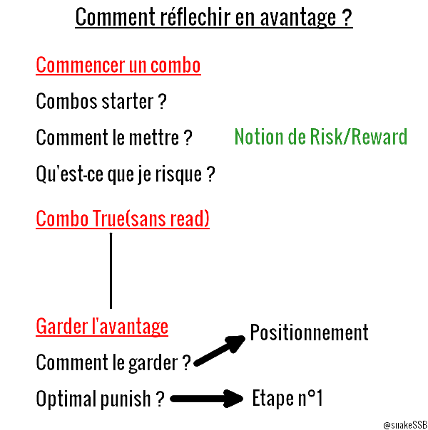

Hey !
Si tu es ici, c'est sûrement que tu t'intéresses à ce veteran de smash et tu as totalement raison !
Je vais essayer de t'aiguiller dans ton apprentissage de ce perso mais je peux ne pas être clair donc si tu as des questions, n'hésite surtout pas à les poser sur Discord ou Twitter !
Guide
Partie 1: Les bases du jeu
Tout d'abord, je te propose de revoir ensemble les bases de smash, à commencer par le vocabulaire. Il est nécessaire de le connaitre et de le comprendre car c'est celui que nous emploierons à partir de maintenant
Voici 3 vidéos du pugilat des étoiles très bien faîtes permettant d'appréhender ces nouveaux termes:
Maintenant que tu connais et maitrise ce vocabulaire, nous allons continuer sur les bases de smash et travailler des techniques fondamentales s'appliquant pour tous les perso. Pas de chance, Fox est un perso qui est très demandant en exécution donc il faut que tu maitrises toutes les techniques qui vont suivre:
- Des conseils de base
- Pour le Dash Cancel, le Short Hop et le RAR (Reversal Aerial Rush)
- La DI
- L'attack cancel
- Wavebounce et B reverse.(Pas très utile pour Fox mais ça peut quand même aider)
Wow, ça fait beaucoup d'info d'un coup nan ? Promi, on arrive à Fox. N'hésite pas à t'entrainer dessus régulièrement pour les maitriser au maximum, elles te seront vraiment utiles
Partie 2: FOX
Déjà, bravo pour être arrivé jusque là ! Ce n'est pas facile et il faut du temps pour tout maitriser donc ne t'inquiète pas si tu as encore des lacunes, tu te corrigeras petit à petit. N'hésite pas à aller régulièrement lab pour t'entrainer !
Entrons dans le cœur du sujet !
- Une vidéo de présentation de Fox en français
- Une autre en anglais mais qui aborde d'autre points. Cliquez ici pour avoir ma traduction.
- La page smash pro tips du perso
Je t'invite grandement à aller lab un peu le perso pour t'habituer à sa vitesse et ses coup.
En le jouant, tu vas vite te rendre compte que sa recovery n'est pas simple à maîtriser parfaitement et qu'en plus de ça comme dit dans les vidéos au dessus, elle est facilement interceptable. Il faudra que tu t’entraînes régulièrement pour voir comment la mixup un maximum. C'est un des points les plus importants du perso.
Et maintenant, voici le plus intéressant... Les combos !
Avant tout, je te conseille d'aller ici pour voir les hits box de Fox ce qui permet de comprendre certains coups
Voici une fiche contenant les fenêtres de % où les combos fonctionnent
Et voici quelques combos en vidéo. Attention cependant tous les combos ne sont pas applicables en Game car la DI n'est pas toujours prise en compte ce qui influe pas mal dessus. Cependant ça train toujours l'exe et ça permet de connaître les trajectoires des coups.
- Combos de base
- Combos intermédiaires
- Advanced combo guide (Là où il y a le moins de chose de true)
Je vous conseil de faire une training routine pour le perso, voici des exemples. Ils sont assez complet mais très long donc prenez juste ce qui vous intéresse pour vous faire la votre
Partie 3: Gameplan
Une fois tous ces combos maitrisés ou au moins connu pour les plus complexes, on va pouvoir apprendre à jouer Fox
Voici une bonne analyse de Gluto sur Light qui peut aider à comprendre la manière de jouer le perso
Pour l'avantage, comme vous l'avez surement vu, Fox est très rapide et son gameplay se base sur cette très grande force. En effet un joueur de ce renard va avoir comme principal intérêt son positionnement car s'il est bon, le joueur de Fox devrait pouvoir réagir à (presque) toutes les options adverses. Pour savoir se positionner, il faut évaluer la portée des coups adverses, jusqu'où il peut drift et la portée de ses coups. Il faudra le plus souvent se positionner entre l'adversaire et le centre du stage pour garder l'avantage mais il ne faudra pas pour autant trop s'éloigner de l'adversaire pour ne pas relâcher la pression. Même si le grab de Fox et ses throws sont mauvais, il faut bien les utiliser sinon l'adversaire n'aura qu'à shield pour être en sécurité. Cette notion de placement vient avec l'expérience, je n'ai pas de guide qui pourrait expliquer clairement comment faire dans toutes les situations mais pas d'inquiétude, ça ne prend pas tant de temps que ça. Voici personnellement les questions que je me pose lorsque j'ai l'avantage. J'utilise la même méthode pour travailler mon gameplan.
En parlant de gameplan, voici une vidéo de Gluto qui en parle très bien
Avec une vitesse aussi importante, Fox excelle en edgetrap. Voici ma fiche d'edgetrap mais évidemment chacun peut le faire à sa manière. Je vous conseil aussi de voir cette vidéo de Flow qui permet de comprendre la logique à avoir.
Pour le désavantage il faut faire très attention car il peut suffire d'une seule erreur pour perdre la stock. Voici quelques conseils :
- Ne pas taper et chercher à juste reset le neutral. C'est une des mauvaises habitudes que l'on croise souvent mais taper en désavantage ne vous aidera que très rarement. Privilégiez l'air dodge et le jump pour vous en sortir mais apprenez à vous en servir car tant que vous n'avez pas touché le stage vous ne pourrez plus les utiliser une seconde fois.
- Bossez un maximum tout les mixup de Fox pour reco. À sa disposition il a un shine qui le fait rester en l'air quelques secondes, un saut qui peut être accompagné d'un Fair pour drift differement, il peut wavebounce avec son pistolet pour modifier son drift, il a pleins d'angles de UpB et un sideB. Un bon mixup est de UpB horizontallement quand vous êtes à l'endroit où vous faîtes un sideB habituellement car le timing est différent. N'hésitez pas à parfois coller le stage avec votre UpB. Cette solution peut quand même s'avérer mauvaise contre certains coups comme le Dair de Sephiroth car vous restez donc plus longtemps sans invincibilité en dessous de l'edge.
- Ne passez pas trop de temps à tempo offstage, il faut aussi parfois revenir à l'edge le plus vite possible avant que l'adversaire ait le temps d'installer son setup ou de se positionner. Plus vous passez de temps hors du terrain, plus l'adversaire pourra bien se placer pour punir toutes vos options
- Quand vous êtes très haut, vous pouvez tenter de sortir une attaque puis quand elle ce finit de faire un fast fall accompagné d'une air dodge neutre. Vous allez parcourir une grande distance avec l'invisibilité ce qui peut être pratique pour land/choper l'edge sans se faire intercepter. Point négatif : Vous ne pouvez pas beaucoup drift donc si l'adversaire est au sol il pourra vous punir une fois atterri
Bonus : Résultat de l'entrainement sur la sortie de l'edgetrap par Zano
Pour le neural, Fox s'en sort très bien. En effet avec sa vitesse il peut reagir dès que l'adversaire fait une erreur. Soit toujours en mouvement et réflechi à quels coups te permettrai d'avoir le meilleur avantage possible. Evite de trop sauter quand même c'est souvent un défaut chez les Fox. Laser si l'adversaire campe trop ou est trop safe ça l'obligera à bouger en esperant qu'il commit. SOIT PATIENT. Soit conscient du MU en connaissant les moves punissables, ne vient pas DA dans un shield ou Upsmash out of shield en pensant punir un Nair de link par exemple.
Pour accompagner, voici une vidéo de Gluto sur le neutral
Merci beaucoup d'avoir lu ce guide, j'espère qu'il t'aura été utile ! Pour le compléter je t'invite à faire un tour dans la section Hitbox et utilité des attaques.
N'hésite pas à rejoindre le FoxCord pour parler avec d'autre joueurs de ce perso !